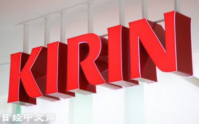

日本麒麟控股公司将于4月开始在中国电商平台上销售健康食品。麒麟将通过资本合作方芳珂（FANCL）出口销售健康食品。在中国，消费者对美容和健康的关注度越来越高。麒麟将利用在中国占得先机的芳珂的销售网，在中国提高品牌认知度。

麒麟将利用在中国销售芳珂健康食品的本地企业“中国国际医药卫生公司”的销售渠道。中国国际医药卫生公司在天猫上开设了网店。将利用该店铺销售麒麟的乳酸菌饮料和营养食品品牌“iMUSE”的商品。
首先将销售营养保健品，每袋价格为189元（约3000日元），比日本国内价格（2200日元，不含税）高出3成。
芳珂于2017年与中国国际医药卫生公司签署了销售代理商合同，主要面向中国日益增长的健康食品市场，按不同年龄层销售不同成分的营养保健品。
版权声明：日本经济新闻社版权所有，未经授权不得转载或部分复制，违者必究。
日经中文网https://cn.nikkei.com